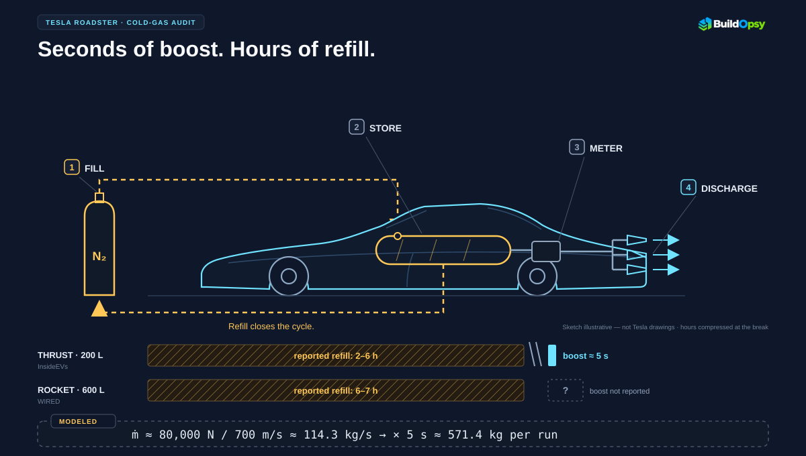
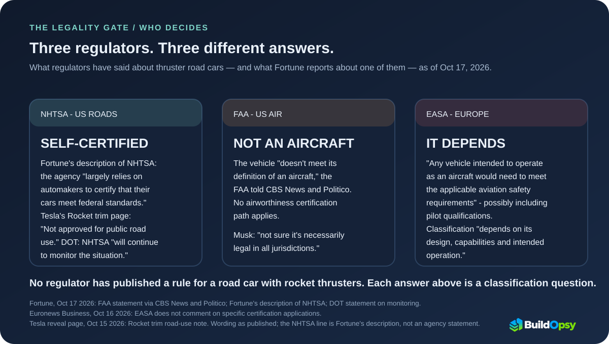

1. What Tesla Actually Showed
October 2026 coverage described a reworked second-generation Roadster and a proposed SpaceX-derived cold-gas propulsion package. Reporting and interview summaries have discussed multiple thrusters, high-pressure gas storage, rapid acceleration, and a vehicle configuration that goes beyond a conventional battery-electric sports car.
The accounts of the demonstration, its operating setup, and the proposed production configurations should be checked against their original reporting. In particular, a remotely operated or unmanned demonstration is not equivalent to a repeatable test of a production vehicle carrying a driver. The earlier report about an unmanned demonstration appeared in Electrek's summary of reporting by The Information. The details of the later reveal are described in the reporting linked in the sources below.
The timing claim needs the same distinction. Road & Track reports that the presentation display showed 0.81 seconds. Car and Driver describes a first run as a claimed 1.0 second and a second as a claimed 0.81 second. Neither account supplies an independent timing protocol or test conditions, so the number remains a reported demonstration result, not proof of repeatable production performance.
For context, Tesla's reported lineup distinguishes a road-oriented Performance configuration from more extreme Thrust and Rocket configurations. Coverage of the latter includes cold-gas thrusters and a warning that the Rocket configuration is not approved for public-road use. Those configuration-specific claims should not be collapsed into a single specification for every Roadster.
2. Cold Gas, Not Combustion
A cold-gas thruster stores a pressurized gas and releases it through a nozzle. The escaping gas carries momentum away from the vehicle, creating thrust in the opposite direction. The gas does not need to burn. The system still needs pressure vessels, valves, regulators, nozzles, plumbing, and a finite supply of propellant.
The general thrust equation is:
F = ṁ × ve + (pe − pa) × Ae
Where:
- F is thrust, in newtons (N).
- ṁ is exhaust mass-flow rate, in kilograms per second (kg/s).
- ve is exhaust velocity, in metres per second (m/s).
- pe is the static pressure at the nozzle exit.
- pa is ambient pressure.
- Ae is nozzle exit area.
The first term, ṁ × ve, represents momentum thrust. The second term represents pressure thrust. The often-used approximation F ≈ ṁ × ve neglects the pressure-thrust term; its accuracy depends on the nozzle and operating conditions. Calculations based on that approximation should be presented as estimates, not measurements.
Tesla's reported descriptions have also discussed carbon-fibre-overwrapped pressure vessels (COPVs), tire-force limits, and fan-generated suction. Those are separate engineering claims that need their own evidence. A vessel's pressure rating does not, on its own, establish its operating pressure, stored gas mass, crashworthiness in the vehicle, or the amount of gas that can be used while maintaining a required thrust.
![Illustrative x-ray sketch of a Roadster-style coupe showing the reported cold-gas system: an external nitrogen supply filling COPV tanks, a regulator and valves, and a rear nozzle cluster, with a dashed refill loop returning to the supply. Component placement is illustrative, not from Tesla drawings. Reported durations sit beside each configuration: about five seconds of boost and a 2–6 hour refill for the 200-liter Thrust (InsideEVs), and a 6–7 hour refill for the 600-liter Rocket (WIRED) with no boost duration reported. A dashed strip models 80,000 N at 700 m/s as about 114.3 kg/s and about 571 kg over five seconds; those inputs come from separate reports and are not one measured configuration.](../images/articles/roadster-boost-budget-mobile.svg)

3. The Tank Arithmetic
The useful starting point is the acceleration claim, because it can be examined without guessing the tank's contents. A speed of 60 mph converts to approximately 26.8224 m/s. If a vehicle reaches that speed from rest in 0.81 seconds, its average acceleration is the change in velocity divided by the elapsed time:
aavg = Δv ÷ Δt
aavg = 26.8224 m/s ÷ 0.81 s ≈ 33.11 m/s²
aavg ≈ 3.38 g
Here, g represents standard gravitational acceleration, approximately 9.80665 m/s². This is an average over the run. It does not show that acceleration remained constant, nor does it identify how much force came from the wheels versus the thrusters. Those questions require a measured acceleration profile and information about the propulsion system's contribution.
We can estimate kinetic energy at 60 mph if we make an explicit assumption about vehicle mass. For this example, assume a mass of 1,800 kg. That is an illustrative input, not a confirmed mass for the configuration used in the reported run.
Ek = ½ × m × v²
Ek = 0.5 × 1,800 kg × (26.8224 m/s)²
Ek ≈ 647,000 J = 647 kJ ≈ 0.18 kWh
This is the kinetic energy of the assumed vehicle at the target speed. It is not the total energy consumed during acceleration, and it is not the energy needed to compress the gas. Real propulsion systems have losses, and the electric drivetrain may provide some or all of the vehicle's acceleration.
Momentum change is not the same as thruster impulse
The change in vehicle momentum for the same illustrative mass and speed change is:
Δp = m × Δv
Δp = 1,800 kg × 26.8224 m/s ≈ 48,300 kg.m/s
Δp ≈ 48.3 kN.s
This is the net momentum change implied by the assumed mass and velocity. It is not automatically the impulse that the thrusters must provide. If the tires and electric motors contribute to acceleration, the thrusters supply only part of the total impulse. A reliable split requires measured forces, the actual acceleration curve, and the vehicle's operating conditions.
Estimating gas consumption from thrust
Under the simplified momentum-thrust approximation, mass flow can be estimated by rearranging the equation:
F ≈ ṁ × ve
ṁ ≈ F ÷ ve
For an explicit scenario, take 80,000 N as a rounded model input; WIRED reports more than 80 kN in launch mode. Assume an effective exhaust velocity of 700 m/s; this is not a Roadster measurement:
ṁ ≈ 80,000 N ÷ 700 m/s ≈ 114.3 kg/s
InsideEVs reports about five seconds of boost for the Thrust version. Applying that interval to the separate 80 kN scenario is a modeled combination, not a report that the same configuration delivered 80 kN for five seconds. If the assumed values remained constant for five seconds, the corresponding discharged mass would be:
mgas ≈ (F ÷ ve) × t
mgas ≈ (80,000 N ÷ 700 m/s) × 5 s ≈ 571.4 kg
Important limitation: This is a conditional calculation, not a measured Roadster result. It assumes sustained 80 kN thrust, a 700 m/s effective exhaust velocity, and a simplified thrust equation that neglects pressure thrust. Actual thrust could vary over time as pressure and flow conditions change. The example cannot establish the real vehicle's burn duration or its tank inventory; it does not pair the reported thrust and boost duration as one tested configuration.
The equation does show why a peak-thrust number is not enough to determine operating time. A meaningful propellant budget needs the measured thrust-versus-time profile, exhaust characteristics, operating pressure, gas temperature, tank volume, and usable pressure range. The gas inventory must also be calculated using appropriate real-gas properties.
4. The Refill Cycle Is the Product
A compressed-gas propulsion system has an operating cycle: fill the pressure vessels, store the gas, discharge it during operation, and replenish the supply before the next run. The duration and infrastructure required for each stage matter as much as the peak thrust if the system is expected to be used repeatedly.
InsideEVs reports that Lars Moravy described a two-to-six-hour fill from an external high-pressure nitrogen supply for the 200-liter Thrust tank, with a goal of under 30 minutes; its story explicitly says this is not the larger Rocket setup. WIRED reports six to seven hours for the 600-liter Rocket system and says Tesla was working toward 30 minutes. These are attributed statements and reported goals, not independently measured refill tests.
The token-bucket calculator can model the abstract request-side tradeoff between burst capacity and refill rate. It is an analogy only: it does not estimate gas mass, pressure, thrust, compressor throughput, or Roadster refill time.
Other reporting has discussed onboard compressors. An external high-pressure supply and an onboard compressor are not the same refill architecture. Their achievable fill rates, power demands, thermal limits, and infrastructure requirements differ. Before comparing the reported times, the actual configuration and fill procedure need to be established.
Why tank volume does not determine gas mass
Knowing that a system has a stated tank volume does not tell us how much usable nitrogen it contains. A defensible calculation needs at least:
- The internal volume of each pressure vessel.
- The actual fill pressure and gas temperature.
- The gas composition and compressibility factor at those conditions.
- The minimum residual pressure at which the system can still deliver the required thrust.
- Pressure losses, regulator behaviour, flow limits, and the usable gas inventory across the discharge.
For a real gas, the relationship between pressure, volume, temperature, and amount of gas can be expressed as:
p × V = Z × n × R × T
Here, p is absolute pressure, V is gas volume, Z is the compressibility factor, n is the amount of gas in moles, R is the universal gas constant, and T is absolute temperature. The ideal-gas approximation sets Z = 1. At high pressure, Z can differ materially from 1 and depends on the gas and the operating conditions.
A maximum vessel pressure rating is not proof of the normal fill pressure. Nor does a rating quoted for one 200-liter vessel establish that all vessels in a reported 600-liter system share the same rating or operating conditions. The amount of gas that can actually be discharged while retaining useful thrust can also be smaller than the total stored inventory.
Refill energy needs verified inputs
Compressing gas requires work. A simplified reversible, isothermal model for an ideal gas is:
W = n × R × T × ln(P2 ÷ P1)
In this expression, n is the amount of gas in moles, R is the universal gas constant, T is absolute temperature, and P1 and P2 are the initial and final absolute pressures. This equation describes an idealized compression path. It is not a complete estimate of real compressor electricity consumption.
A realistic estimate needs the actual gas inventory, initial and final pressures, temperatures, compressor efficiency, cooling requirements, and the compression process. The amount of gas must itself be established using the real tank conditions and appropriate gas properties. If those inputs are unknown, selecting a gas mass first and calculating an energy figure from it only hides the uncertainty.
For that reason, this audit does not assert a definitive refill-energy total, a guaranteed refill duration, or a compressor power requirement. The engineering question is whether the complete system can repeatedly deliver its required performance, how long replenishment takes under documented conditions, what equipment is needed, and how those constraints fit actual vehicle use.
Noise is another unresolved practical consideration. High-speed gas discharge can be loud, but a specific sound-pressure level depends on the nozzle, flow, geometry, distance, and surroundings. Reporting that a demonstration required spectators to stand far away does not establish a decibel value. A measured noise result would require documented instrumentation, distance, and operating conditions.
5. The Regulatory Boundary
A road vehicle equipped with high-pressure gas propulsion raises engineering and compliance questions beyond thrust. These can include pressure-vessel qualification, mounting and crash loads, line and valve integrity, thermal exposure, safe venting, maintenance procedures, and the consequences of a leak or component failure.
The applicable requirements depend on the final design, the jurisdiction, and whether a particular configuration is intended and permitted for road use, aviation use, or neither. General discussion of pressure-vessel rules is not enough to establish that a specific vehicle has passed the relevant tests.
Fortune's reporting, citing CBS News and Politico, described the FAA's view that the vehicle did not meet its definition of an aircraft. The same reporting discussed the US Department of Transportation's response and NHTSA's role in vehicle safety. Those accounts should be read as descriptions of the statements and regulatory context reported at the time, not as a universal determination covering every possible design or future configuration.
European reporting likewise quoted EASA explaining that a vehicle intended to operate as an aircraft would need to meet applicable aviation safety requirements, potentially including pilot qualifications, and that classification depends on design, capabilities, and intended operation. That general explanation is not an approval or rejection of a specific Roadster configuration.
Road & Track reports that Tesla's Rocket configuration is not approved for public-road use. That is a company-reported product qualification, not regulatory certification for a specific vehicle. A demonstration does not establish road-vehicle certification or production readiness.

6. The Promises Ledger
The original Roadster announcement provides context for evaluating the latest targets. Tesla unveiled the earlier Roadster in November 2017, with claims including 1.9 seconds to 60 mph, a 620-mile range, a top speed above 250 mph, seating for four, a $200,000 price, and deliveries targeted for 2020. These were announced targets, not proof that a vehicle meeting every specification was delivered on that schedule.
The October 2026 reporting describes revised configurations and performance targets. Since the figures are attributed to interviews, product material, and media coverage, they should be understood as reported claims until the final production specification and independent tests are available.
| Spec | November 2017 claim | October 2026 reported state |
|---|---|---|
| 0–60 mph | 1.9 s target | Under 1.6 s for Performance; 0.85 s and 0.55 s figures attributed to the Thrust and Rocket configurations in interview coverage; 0.81 s reported for a demonstration |
| Range | 620 mi target | 300+ mi claimed; reported executive comments discuss approximately 310–320 mi in real-world use |
| Top speed | 250+ mph target | 210 mph for Performance and 230 mph for Thrust/Rocket, as reported from interview material |
| Seating | 2+2 | Two seats for Performance and Thrust; one seat for Rocket, according to reporting |
| Money | $200K target price, $50K deposits | Reported reservation amounts and payment terms vary by configuration; review the current reservation agreement for exact terms |
| Deliveries | 2020 target | 2028 production/delivery target reported in October 2026 coverage |
The reservation agreement is a separate source of evidence. InsideEVs reported that the current agreement describes the listed price as an estimate and states that Tesla cannot guarantee when a vehicle will be delivered or whether it will be delivered. Anyone considering a reservation should read the live agreement and confirm the current price, refund terms, and delivery language directly before paying.
A revised target or a refundable reservation is meaningful commercial information, but neither is the same as a completed delivery. The final production configuration, verified specifications, and customer delivery record remain the relevant evidence for execution.
7. Claimed vs. Proved
Claimed: the fastest car ever made. Public statements have described the Roadster as capable of extraordinary acceleration and performance. The available demonstration reports are not enough to establish a production car's repeatable acceleration or prove that it has broken a track record. That would require independently documented tests, clearly defined conditions, and comparable timing methodology.
Claimed: a road-ready car with an unusual propulsion system. Interview coverage has attributed substantial power, high-voltage architecture, fast charging, and other specifications to the proposed vehicle. These figures may be useful indicators of the intended design, but they remain reported claims unless confirmed for the final production configuration. A conventional electric drivetrain's specifications also do not verify the performance or safety of the cold-gas system.
Claimed: extreme performance is worth the trade-offs. Public comments have framed the Roadster as an engineering statement rather than a safety-optimized conventional car. That positioning is not crash-test data. Neither the marketing language nor the presence of a thruster system proves or disproves crash performance, occupant protection, or the safety of high-pressure components in a collision.
Claimed: it will ship. A public target, a product page, a reservation agreement, and a stated lineup are evidence of announced commercial intent. They do not guarantee delivery. The agreement's actual language, the final vehicle specifications, and independently verifiable production and delivery records are stronger evidence of execution.
The same discipline applies to market commentary and regulatory statements: identify who said what, when they said it, and whether the statement is a measured result, a reported opinion, a company target, or an independent finding. Mixing those categories creates certainty the underlying evidence does not support.
8. The Verdict
Cold-gas propulsion is a real engineering technique. Its thrust can be described by momentum and pressure terms, and its implications for acceleration can be evaluated with Newtonian mechanics. None of that requires assuming that every public Roadster claim is either true or false.
If a vehicle reaches 60 mph from rest in 0.81 seconds, the implied average acceleration is approximately 33.11 m/s², or 3.38 g. Under an illustrative 1,800 kg mass assumption, its kinetic energy at that speed is approximately 647 kJ, and its net momentum change is about 48.3 kN.s. Those are calculations from stated inputs, not independent confirmation that the reported run occurred under those exact conditions.
The propellant budget is a separate problem. A simplified example using 80 kN of thrust and 700 m/s exhaust velocity implies about 114.3 kg/s of mass flow if the momentum-thrust approximation is appropriate. Holding those values for five seconds would correspond to approximately 571 kg of discharged gas. That is a conditional result, not a measured Roadster gas-consumption rate. It cannot be compared reliably with a tank's capacity until the actual gas inventory and operating conditions are established.
The available information does not justify presenting a precise tank mass, burn duration, refill-energy total, or guaranteed refill time as verified fact. Those quantities depend on the actual pressure vessels, fill conditions, gas properties, usable residual pressure, measured thrust profile, and refill equipment.
The acceleration claim has calculable physical implications. The complete propellant budget does not close until the actual tank inventory and thrust profile are known. The decisive evidence is measured performance and a reproducible operating cycle—not a headline number.
Sources and Method
This audit separates reported claims, statements attributed to interviews, and calculations made under explicit assumptions. The equations below use standard mechanics and propulsion relationships. The 1,800 kg vehicle mass, 80 kN thrust, 700 m/s exhaust velocity, and five-second interval are illustrative inputs where stated; they are not verified Roadster measurements. This article does not treat unverified real-gas tank masses, burn durations, compression-energy totals, or refill times as established specifications.
| Class | Items in this file |
|---|---|
| Reported claims | Roadster configuration descriptions, acceleration targets, tank volumes and ratings, refill estimates, production targets, and regulatory statements attributed to the cited reporting or interviews |
| Calculated from stated inputs | 0–60 mph velocity conversion; average acceleration for 0.81 seconds; illustrative kinetic energy and momentum change for a 1,800 kg vehicle; conditional mass-flow estimate for 80 kN at 700 m/s |
| Illustrative assumptions | 1,800 kg vehicle mass; 80 kN thrust; 700 m/s effective exhaust velocity; five seconds at the assumed thrust and exhaust velocity |
| Unresolved | Verified vehicle mass for the demonstration; measured thrust curve; actual gas mass; operating and residual pressures; real-gas tank inventory; noise level; crash data; independently measured refill energy and duration; final production configuration and applicable certification |
Calculation method
- Speed conversion: 60 mph × 0.44704 = 26.8224 m/s.
- Average acceleration: aavg = Δv ÷ Δt = 26.8224 m/s ÷ 0.81 s ≈ 33.11 m/s², equivalent to about 3.38 times standard gravitational acceleration.
- Kinetic energy: Ek = ½ × m × v². With an illustrative mass of 1,800 kg, Ek ≈ 647 kJ.
- Momentum change: Δp = m × Δv. With the same illustrative mass, Δp ≈ 48.3 kN.s. This is net vehicle momentum change, not automatically thruster impulse.
- Simplified mass flow: ṁ ≈ F ÷ ve. With the illustrative inputs F = 80,000 N and ve = 700 m/s, ṁ ≈ 114.3 kg/s. The estimate neglects the nozzle pressure-thrust term.
- Conditional five-second gas use: mgas ≈ (F ÷ ve) × t = (80,000 N ÷ 700 m/s) × 5 s ≈ 571.4 kg (about 571 kg to the nearest kilogram). This does not establish the actual Roadster's thrust history or propellant consumption.
- Gas inventory: p × V = Z × n × R × T. Tank volume alone cannot determine gas mass; the fill conditions, gas properties, compressibility factor, and usable pressure range are required.
- Idealized compression work: W = n × R × T × ln(P2 ÷ P1). A numerical estimate requires a verified gas inventory and pressure/temperature conditions. This idealized equation does not by itself determine real compressor electricity consumption.
Reporting and product references
- Road & Track: October 15 presentation timing displayed 0.81 seconds to 60 mph (October 15, 2026)
- Car and Driver: Roadster reveal reporting — demonstration runs and the reported thrust figure (October 2026)
- TechCrunch: Tesla reveals SpaceX-powered Roadster (October 15, 2026)
- WIRED: Reporting on the proposed Roadster propulsion system (October 2026)
- Hagerty: Henry Catchpole's Roadster engineering walkthrough with Lars Moravy (published October 2026)
- TeslaNorth: Summary of the Hagerty engineering interview (October 16, 2026)
- Fortune: Roadster, production target, and reported regulatory responses (October 17, 2026)
- InsideEVs: Reported tank-replenishment estimates and propulsion details (October 2026)
- InsideEVs: Reported Roadster specifications (October 2026)
- InsideEVs: Roadster reservation agreement and delivery language (October 2026)
- InsideEVs: Roadster price, trim, and release-date reporting (2026)
- Electrek: Roadster reveal and reported configuration details (October 15, 2026)
- Euronews Business: EASA explanation and analyst reactions (October 16, 2026)
- Electrek, reporting on The Information: proposed unmanned Roadster demonstration (August 14, 2026)
- Fortune: Original 2017 Roadster announcement and targets (November 17, 2017)
- NIST Chemistry WebBook: Fluid thermophysical properties. Consult gas-specific data at the relevant conditions before estimating tank inventory.
This article is an independent engineering analysis, not a statement from Tesla or SpaceX. Reported product claims and specifications may change as further technical details become available. The calculations show the consequences of stated assumptions; they do not replace measurements of the actual vehicle.